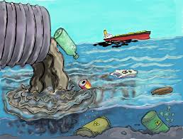
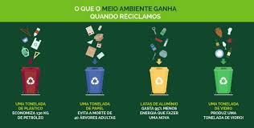
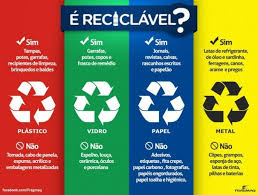

Bem-vindo ao nosso site sobre Reciclagem de Eletrodomésticos
Descubra como a reciclagem de eletrodomésticos pode ajudar a salvar o planeta e promover um futuro sustentável.

Descubra como a reciclagem de eletrodomésticos pode ajudar a salvar o planeta e promover um futuro sustentável.
O descarte incorreto de eletrodomésticos causa sérios danos ao meio ambiente. Substâncias tóxicas podem contaminar o solo e a água, além de contribuir para o aumento de resíduos nos aterros sanitários.
A reciclagem de eletrodomésticos não só reduz o impacto ambiental, mas também promove a economia circular, reutilizando materiais e criando novos produtos.
Saiba como reciclar seus eletrodomésticos de forma adequada. Encontre pontos de coleta e siga as melhores práticas para o descarte.
Veja exemplos inspiradores de reciclagem de eletrodomésticos que fizeram a diferença para o meio ambiente e a comunidade.